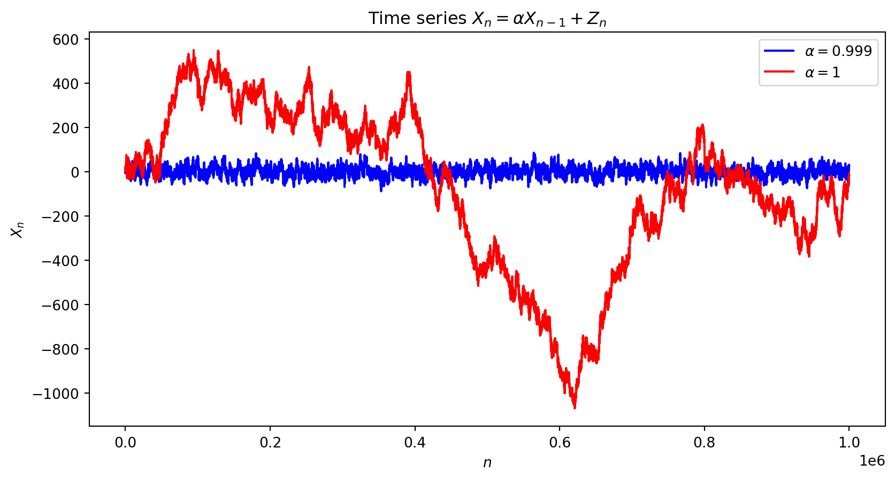

\[ \renewcommand{\P}{\mathbb{P}} \renewcommand{\E}{\mathbb{E}} \newcommand{\R}{\mathbb{R}} \newcommand{\var}{\mathrm{Var}} \newcommand{\cov}{\mathrm{cov}} \newcommand{\corr}{\mathrm{corr}} \newcommand{\dx}{\,\mathrm{d}x} \newcommand{\dy}{\,\mathrm{d}y} \newcommand{\eps}{\varepsilon} \]
A time series is an infinite sequence of random numbers parametrized (indexed) by (discrete) time: \(X_1,X_2,X_3,\ldots,X_n,\ldots\in\R\). In real data, the values \(X_1,X_2,\ldots\) are typically not independent.
Example: \(X_n = 1.005\,X_{n-1} + Y_n\), where \(Y_n\) is random and may itself depend on time \(n\).
A time series \(\{X_n\}\) is called (weakly) stationary if:
In other words, \(\cov(X_n,X_\ell)\) depends only on the time-lag \(\ell-n\). If \(\{X_n\}\) is stationary, then \(\var(X_n)=\cov(X_n,X_n)\) does not depend on \(n\) either, and neither does \(\corr(X_n,X_\ell)\) (as a function of \(\ell-n\)).
Let \(Y,Z\) be uncorrelated, \(\E(Y)=\E(Z)=0\), \(\var(Y)=\var(Z)=\sigma^2\) (e.g. independent \(N(0,\sigma^2)\)). For fixed \(\lambda\in[0,2\pi]\), define \[ X_n = Y\cos(n\lambda) + Z\sin(n\lambda). \] Then \(\E(X_n)=\cos(n\lambda)\E(Y)+\sin(n\lambda)\E(Z)=0\) — constant in \(n\).
Using \(\E(Y^2)=\E(Z^2)=\sigma^2\) and \(\E(YZ)=\cov(Y,Z)=0\), a direct expansion gives \[ \E(X_n X_{n+m}) = \bigl(\cos(n\lambda)\cos((n{+}m)\lambda) + \sin(n\lambda)\sin((n{+}m)\lambda)\bigr)\sigma^2 = \cos(m\lambda)\,\sigma^2. \] So \(\E(X_n^2)=\sigma^2<\infty\) and \(\cov(X_n,X_{n+m})=\cos(m\lambda)\sigma^2\) depends on \(m\) only: \(\{X_n\}\) is stationary.
A time series \(\{Z_n\}\) is a white noise if (1) \(\E(Z_n)=0\), and (2) for some \(\sigma>0\), \[ \cov(Z_n,Z_{n+m})=\begin{cases}\sigma^2, & m=0,\\ 0, & m\neq0.\end{cases} \] I.e. white noise has zero mean and uncorrelated values.
The standard example of white noise: i.i.d. \(Z_n\sim\mathcal{N}(0,\sigma^2)\).
\[ X_n = \mu + \alpha(X_{n-1}-\mu) + Z_n, \qquad X_0=a\in\R, \] where \(\mu,\alpha\) are constants and \(\{Z_n\}\) is white noise, independent of \(\{X_n\}\). Then \(X_1=\mu+\alpha(a-\mu)+Z_1\), \(X_2=\mu+\alpha(X_1-\mu)+Z_2\), and so on — each new value uses a fresh, independent \(Z_n\).
Writing \(Y_n:=X_n-\mu\) gives \(Y_n=\alpha Y_{n-1}+Z_n\). We look for conditions making \(\{X_n\}\) (hence \(\{Y_n\}\)) stationary.
If \(\E(Y_n)=k\) (constant), then \(k=\alpha k+0\), so \(\alpha=1\) or \(k=0\). Since \(\alpha=\pm1\) would force \(\sigma=0\) (impossible), we need \(\alpha\neq\pm1\) and \(k=0\), i.e. \(\E(X_n)=\mu\).
If \(\var(Y_n)=v\) (constant), independence of \(Z_n\) gives \(v=\alpha^2v+\sigma^2\), i.e. \(v(1-\alpha^2)=\sigma^2\), so \[ \var(X_n)=v=\frac{\sigma^2}{1-\alpha^2}. \] Since \(\var(X_n)\geq0\), we need \(1-\alpha^2>0\), i.e. \(|\alpha|<1\).
\(|\alpha|<1\) is necessary and sufficient for stationarity of \(X_n=\alpha X_{n-1}+Z_n\). Equivalently, using the characteristic equation \(1-\alpha\lambda=0\) (so \(\lambda=\tfrac1\alpha\)): the series is stationary iff \(|\lambda|>1\).

\[ X_n = \mu + \alpha_1(X_{n-1}-\mu) + \alpha_2(X_{n-2}-\mu) + Z_n, \qquad \alpha_2\neq0, \] with initial values \(X_0=a\), \(X_1=b\). Then \(X_2=\mu+\alpha_1(b-\mu)+\alpha_2(a-\mu)+Z_2\), then \(X_3\) uses \(X_2\) and \(X_1\), and so on. With \(Y_n=X_n-\mu\): \(Y_n=\alpha_1Y_{n-1}+\alpha_2Y_{n-2}+Z_n\).
The characteristic equation is \(1-\alpha_1\lambda-\alpha_2\lambda^2=0\), with two roots \(\lambda_1,\lambda_2\) (possibly complex). The time series is stationary iff \(|\lambda_1|>1\) and \(|\lambda_2|>1\).
\(a\lambda^2+b\lambda+c=0\) (\(a\neq0\)) has roots \(\lambda_{1,2}=\dfrac{-b\pm\sqrt{D}}{2a}\), discriminant \(D=b^2-4ac\). If \(D<0\), the roots are complex: \(\lambda_{1,2}=p\pm qi\) (\(i^2=-1\)), with \(|p\pm qi|=\sqrt{p^2+q^2}\).
\[ X_n=\tfrac1{12}X_{n-1}+\tfrac12X_{n-2}+Z_n. \] Characteristic equation: \(\lambda^2+\tfrac16\lambda-2=0\), \(D=\tfrac1{36}+8=\tfrac{289}{36}\), \(\sqrt D=\tfrac{17}{6}\). \[ \lambda_1=-\tfrac32, \qquad \lambda_2=\tfrac43. \] Both \(|\lambda_1|,|\lambda_2|>1\): stationary.
\[ X_n=\tfrac13X_{n-1}+\tfrac23X_{n-2}+Z_n. \] Characteristic equation: \(2\lambda^2+\lambda-3=0\), \(D=25\). \[ \lambda_1=-\tfrac32, \qquad \lambda_2=1. \] \(|\lambda_1|>1\) but \(|\lambda_2|=1\not>1\): not stationary.
\[ X_n = 2X_{n-1} - 2X_{n-2} + Z_n. \] Characteristic equation: \(2\lambda^2-2\lambda+1=0\), \(D=4-8=-4<0\) (complex roots): \[ \lambda_{1,2} = \frac{2\pm\sqrt{-4}}{4} = \frac12\pm\frac12 i. \] \[ |\lambda_{1,2}| = \sqrt{\left(\tfrac12\right)^2+\left(\tfrac12\right)^2} = \frac{\sqrt2}{2} < 1. \] Not stationary.
\[ X_n = \mu + \alpha_1(X_{n-1}-\mu) + \cdots + \alpha_p(X_{n-p}-\mu) + Z_n. \]
E.g. AR(3): \(X_n = aX_{n-1}+bX_{n-2}+cX_{n-3}+Z_n\). Given \(a,b,c,X_0,X_1,X_2\), generate \(Z_3\) to get \(X_3=aX_2+bX_1+cX_0+Z_3\), then \(X_4=aX_3+bX_2+cX_1+Z_4\), and so on.
The characteristic equation \(1-\alpha_1\lambda-\cdots-\alpha_p\lambda^p=0\) has \(p\) roots \(\lambda_1,\ldots,\lambda_p\) (possibly complex). The AR(\(p\)) series is stationary iff \(|\lambda_1|>1,\ldots,|\lambda_p|>1\).
The roots may be found numerically (e.g. in Python) for larger \(p\).
\[ X_n = \mu + Z_n + \beta_1Z_{n-1} + \cdots + \beta_qZ_{n-q}. \]
Since \(\E(Z_{n-j})=0\) for all \(j\), \(\E(X_n)=\mu\) — constant. To check the covariance condition, take \(q=1\), \(\mu=0\): \(X_n=Z_n+\beta Z_{n-1}\), \(X_{n+m}=Z_{n+m}+\beta Z_{n+m-1}\) (\(m>0\)). Expanding, \[ \cov(X_n,X_{n+m}) = \underbrace{\cov(Z_n,Z_{n+m})}_{=0} + \beta\underbrace{\cov(Z_{n-1},Z_{n+m})}_{=0} + \beta\underbrace{\cov(Z_n,Z_{n+m-1})}_{=\sigma^2 \text{ if } m=1,\ 0 \text{ if } m>1} + \beta^2\underbrace{\cov(Z_{n-1},Z_{n+m-1})}_{=0} \] — depends on \(m\) only.
In other words, MA(\(q\)) is always stationary.
“AR” = autoregressive, “MA” = moving average — this model includes past white noise too: \[ X_n = \mu + \alpha_1(X_{n-1}-\mu) + \cdots + \alpha_p(X_{n-p}-\mu) + Z_n + \beta_1Z_{n-1} + \cdots + \beta_qZ_{n-q}. \]
The characteristic equation and stationarity condition for ARMA(\(p,q\)) coincide with those of its AR(\(p\)) component — you may ignore the \(\beta\)’s for stationarity.
Consider an ARMA(2,\(q\)) model with characteristic equation \(1=\alpha_1\lambda+\alpha_2\lambda^2\). Suppose \(\lambda=1\) is a root: then \(|\lambda|\not>1\), so \(\{X_n\}\) is not stationary.
Substituting \(\lambda=1\): \(1=\alpha_1+\alpha_2\), so \(\alpha_1=1-\alpha_2\). Then \[ X_n = \alpha_1X_{n-1}+\alpha_2X_{n-2}+Z_n+\cdots = (X_{n-1}-\alpha_2X_{n-1})+\alpha_2X_{n-2}+Z_n+\cdots \] \[ X_n - X_{n-1} = -\alpha_2(X_{n-1}-X_{n-2}) + Z_n+\cdots. \]
Denoting \(Y_n:=X_n-X_{n-1}\) (the differencing of \(X_n\)): \(Y_n=-\alpha_2Y_{n-1}+Z_n+\cdots\) — an ARMA(1,\(q\)) series. If \(|\alpha_2|<1\), \(Y_n\) is stationary.
If the characteristic equation of an ARMA(2,\(q\)) model has roots \(\lambda_1=1\) and \(|\lambda_2|>1\), then \(\{X_n\}\) is not stationary, but \(Y_n=X_n-X_{n-1}\) is. We then say \(\{X_n\}\) follows an ARIMA(1,1,\(q\)) model — the first “1” because \(Y_n\) is ARMA(1,0)-like, the second “1” because differencing was applied once.
Recovering \(X_n\) from \(Y_n\): \[ Y_n = X_n - X_{n-1} \iff X_n = Y_n+X_{n-1} = Y_n+Y_{n-1}+X_{n-2} = \cdots = Y_n+Y_{n-1}+\cdots+Y_1+X_0. \]